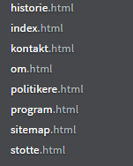
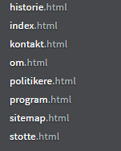

Our client is named Ragnhild Kristensen, and is the chief of communication at Studentpartiet. She is also a public communication student at NTNU.
The goal of this web site is to inform people about Studentpartiet, and their political views.
The goal is to make a web site that makes people vote for Studentpartiet
The audience of this website is primarily students.
Navigation will primarily be through the navigation bar.
The navigation bar is going to link to:
Because it is important that the user may go back to the front page, in case they feel like they are lost.
Because it is important that users find information about the party.
This site is going to link to the contact page and the history page of the site, as these pages give more detailed information about Studentpartiet.
Because Studentpartiet is a political party, and then .
Because it is important that the user may go back to the front page, in case they feel like they are lost.
 

The site is going to have a main CSS file, called main.css, that includes the theme of the site. Each of the pages is going to have their own CSS-file as well.
The background color of the page is very light gray, because it is important that the background doesn't steal to much of the audience's attention.
The standard font color is going to be dark gray. It's not quite black and white, because we wish to reduce contrast, so that you wouldn't be weary of reading. By going standard black and white, the design won't steal people's attention, and it gives a modern minimalistic appearance.
The navigation bar, buttons and icons will be in orange (#e9a301), because that is Studentpartiet's political color, and the page will remind people of them.
The primary font of the site is going to be Verdana.
The standard font size will be 12px.
The navigation bar is going to be at the top of the page, and link to the most important pages of the site.
The background color of the navigation bar will be orange, to as that is Studentpartiet's political color.
The navigation bar is going to consist of links in light gray staying on an horizontal line when the user is on desktop, and when on mobile the navigation bar will be a button you can press, and the menu will appear vertically below it.
The footer is going to be on the bottom of every page, and have some contact info and link to social media.
The background color of the footer is going to be dark gray .
The navigation bar is going to consist of links in orange staying on an horizontal line when the user is on desktop, and when on mobile the navigation bar will be a yellow button you can press, and the menu will appear vertically below it.
The page should contain a summary of the party's main political objectives and a photo gallery of smiling humans.
The summary of the main political objective is supposed to give visitors an intuition of what the party's political stances.
This page is index.html, and will use main.css and index.css for styling and galleri.js as picture gallery. The pictures are bilde1.jpg and so on. The reason we use jpg is that it is the best format when having photos, because this have better color depth and thus represent the color on the photo better.
This page will also have a summary of Studentpartiet's main political objectives. They are going to be located beneath the photo gallery, so that visitors don't get overwhelmed by text. Each objective is going to be in a div with an orange background-color.
The photos of smiling humans are supposed to give the visitors positive connections to the party and it's politics
The page should contain an address, a phone number, and an email address.
The page should also contain links Studentpartiet's accounts on different social media, like Facebook and Twitter.
The purpose of the page is to make it easy for visitors to contact the party if they have any questions about the party and it's political views. The point of the social media links is so that vistors may follow the party, for the latest news about them. Furthermore social media is the prefered communication channel for the youths, the site's main demographic.
This page consist of kontakt.html and uses main.css and kontakt.css for styling.
The page should contain Studentpartiet's political views and a way to compare those views to that of other political parties.
The purpose of this page is to make the party's political views easily accessible if people wonder what the party's views are in one certain area, and how they compare to those of other parties. This is only for people wondering what their views is in a certain area, the party's main political objectives are promoted on the front page.
The design of this site is going to be a headline at the top. Below it, we are going to have select elements, with labels of what they are for. Below that again, we have a button that get the application started.
The application is going to consist of a HTML table, with two columns and two rows. The first row is going to have the name of the respective parties, and the second row is going to have their views. The table is going to be styled with collapsed 2px solid black borders.
This is the page where the political comparison application will be located.
This page consists of program.html and uses main.css and program.css for styling, and program.js for political comparison.
This function is a picture gallery with transitions between different pictures.
The picture gallery is going to have two arrows for navigation. These will be on each site of the picture and will appear when the user hover the mouse over the picture. Because of this, the gallery will only have a still image on mobile
This will be made with HTML5 canvas. The arrows will appear when the mouseover function triggers on the canvas and disappear on mouseleave. To make the transition for the pictures, we will use window.setinterval and change the x-coordinate of the picture
This function is that you have two select tags and a button. The first select tag has a number of policy areas where you might want to know Studentpartiet's opinion. The second select tag has a number of Norwegian political parties. When you click the button you get a comparison of Studenpartiet and the other party on that specific policy area
This will be made with JavaScript, with the different political views are laying in arrays. JavaScript is going to get the right value when the button is pressed, with the choices you made and add them into the HTML, and remove eventual political comparisons that are there already.
| Creator | Task | File | Due date |
|---|---|---|---|
| Ole Fredrik Berg | Picture gallery in HTML5 canvas and JavaScript | galleri.js and index.html | 10.11.2017 |